Results for HW2, Problem 2
Contents:
Canada,
Canada using HP filter
Sweden,
Sweden using HP filter
Australia,
Australia using HP filter
Mexico,
Mexico using HP filter
Japan,
Japan using HP filter
Canada
Simple Log-Linear Detrending


Stats about % Deviation from Trends:
|
Y |
C |
G |
I |
X |
M |
| Standard Deviation: |
0.037171 |
0.029647 |
0.056480 |
0.101223 |
0.167460 |
0.126039 |
| Coorelation with Y component: |
1.000000 |
0.835823 |
0.313145 |
0.422592 |
0.583767 |
0.592546 |
Detrending with HP Filter
 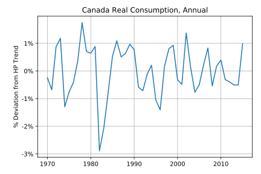
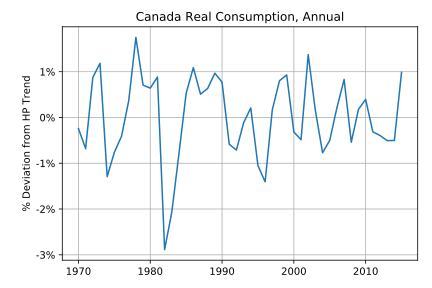

 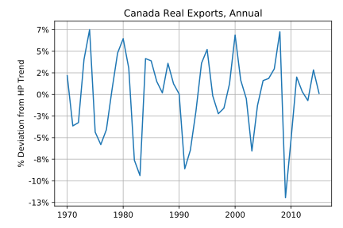
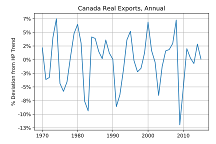

Stats about % Deviation from HP Trends:
|
Y |
C |
G |
I |
X |
M |
| Standard Deviation: |
0.012524 |
0.009087 |
0.013709 |
0.048358 |
0.044567 |
0.042645 |
| Coorelation with Y component: |
1.000000 |
0.514414 |
-0.490509 |
0.868570 |
0.815121 |
0.772457 |
Sweden
Simple Log-Linear Detrending


 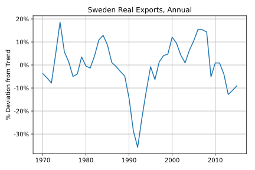
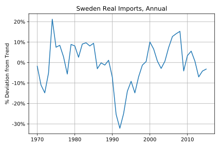
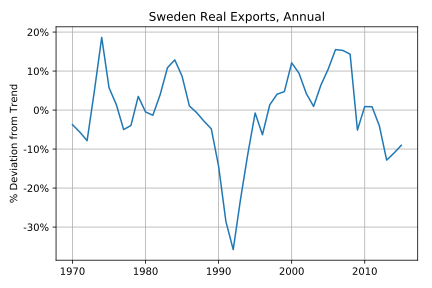
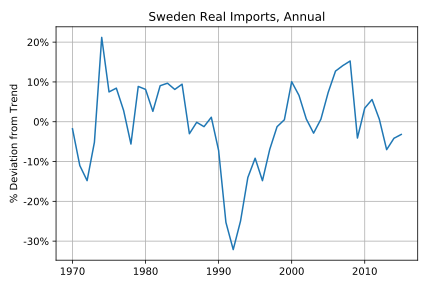
Stats about % Deviation from Trends:
|
Y |
C |
G |
I |
X |
M |
| Standard Deviation: |
0.034208 |
0.025447 |
0.053222 |
0.126888 |
0.103076 |
0.102575 |
| Coorelation with Y component: |
1.000000 |
0.850002 |
-0.051382 |
0.835016 |
0.595563 |
0.673711 |
Detrending with HP Filter


 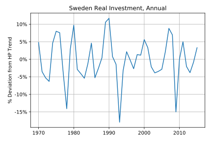
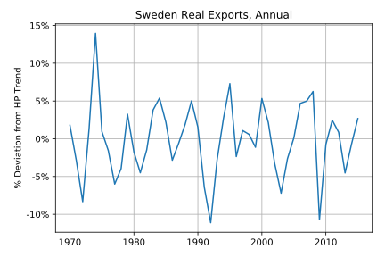
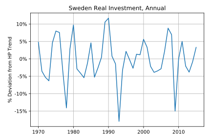
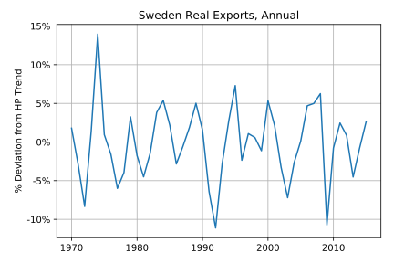

Stats about % Deviation from HP Trends:
|
Y |
C |
G |
I |
X |
M |
| Standard Deviation: |
0.013581 |
0.009922 |
0.009704 |
0.060752 |
0.047979 |
0.056721 |
| Coorelation with Y component: |
1.000000 |
0.493438 |
-0.065856 |
0.871366 |
0.631616 |
0.637176 |
Australia
Simple Log-Linear Detrending


 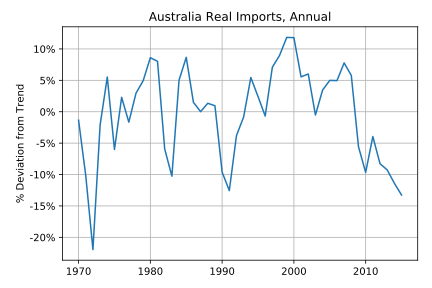
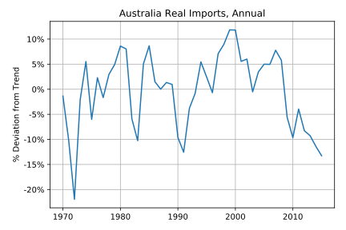
Stats about % Deviation from Trends:
|
Y |
C |
G |
I |
X |
M |
| Standard Deviation: |
0.022314 |
0.023905 |
0.046946 |
0.082519 |
0.074370 |
0.072865 |
| Coorelation with Y component: |
1.000000 |
0.478576 |
-0.466332 |
0.764074 |
0.419903 |
0.289413 |
Detrending with HP Filter
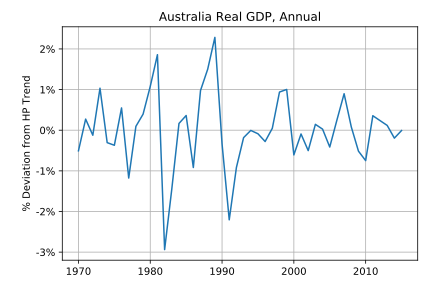


Stats about % Deviation from HP Trends:
|
Y |
C |
G |
I |
X |
M |
| Standard Deviation: |
0.009158 |
0.008355 |
0.017767 |
0.046911 |
0.044801 |
0.043414 |
| Coorelation with Y component: |
1.000000 |
0.034728 |
-0.167555 |
0.900819 |
0.151914 |
0.550228 |
Mexico
Simple Log-Linear Detrending
 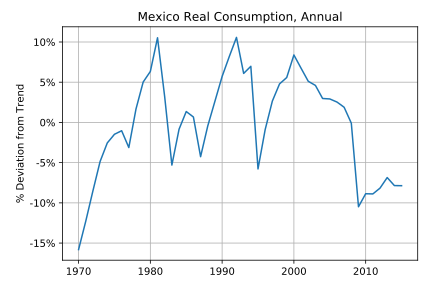
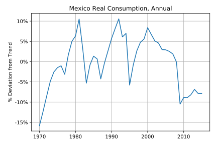

 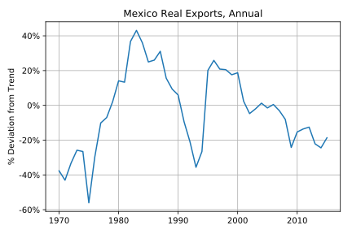
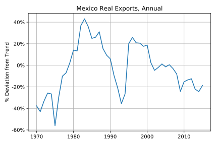

Stats about % Deviation from Trends:
|
Y |
C |
G |
I |
X |
M |
| Standard Deviation: |
0.079175 |
0.062236 |
0.137328 |
0.143828 |
0.254968 |
0.138324 |
| Coorelation with Y component: |
1.000000 |
0.799139 |
0.732612 |
0.838302 |
0.633026 |
0.573893 |
Detrending with HP Filter


 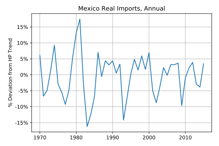
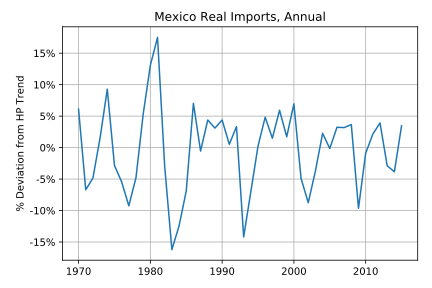
Stats about % Deviation from HP Trends:
|
Y |
C |
G |
I |
X |
M |
| Standard Deviation: |
0.021057 |
0.024991 |
0.044031 |
0.060772 |
0.077635 |
0.068047 |
| Coorelation with Y component: |
1.000000 |
0.868778 |
0.665296 |
0.884121 |
-0.323421 |
0.450846 |
Japan
Simple Log-Linear Detrending
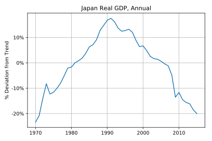


Stats about % Deviation from Trends:
|
Y |
C |
G |
I |
X |
M |
| Standard Deviation: |
0.112949 |
0.107755 |
0.087731 |
0.157744 |
0.142472 |
0.200073 |
| Coorelation with Y component: |
1.000000 |
0.980472 |
0.821684 |
0.925573 |
-0.047554 |
-0.350086 |
Detrending with HP Filter


 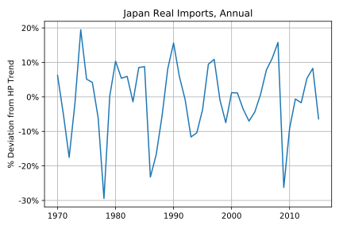
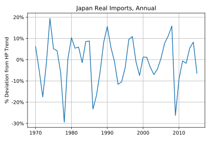
Stats about % Deviation from HP Trends:
|
Y |
C |
G |
I |
X |
M |
| Standard Deviation: |
0.013089 |
0.010098 |
0.010149 |
0.040269 |
0.069883 |
0.101430 |
| Coorelation with Y component: |
1.000000 |
0.767855 |
0.056590 |
0.856621 |
0.318506 |
0.426927 |